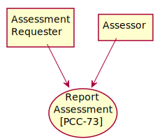

IHE ACDC Implementation Guide
0.1.0 - CI Build
IHE ACDC Implementation Guide
0.1.0 - CI Build
IHE ACDC Implementation Guide, published by Integrating the Healthcare Enterprise (IHE). This is not an authorized publication; it is the continuous build for version 0.1.0). This version is based on the current content of https://github.com/IHE/ACDC/ and changes regularly. See the Directory of published versions
This section corresponds to Transaction PCC-73 of the IHE PCC Technical Framework. Transaction PCC-73 is used by the Assessment Requester and Assessor Actors.
The Report Assessment transaction is used to report the results of an assessment. The result of this transaction is the production of a FHIR QuestionnaireResponse Resource that contains the results of the assessment.

Figure 3.73.2-1: Use Case Diagram
| Actor | Role |
|---|---|
| Assessment Requestor | Requests an assessment be performed using the specified FHIR Questionnaire Resource for the patient and encounter in the current context. |
| Assessor | Responds to request, by creating a FHIR QuestionnaireResponse Resource for the patient and encounter in the current context representing the execution of the assessment instrument provided. |
| Standard | Name |
|---|---|
| HL7 FHIR | HL7® FHIR#174 standard R4 |
| IETF RFC 2616 | Hypertext Transfer Protocol - HTTP/1.1 |
| IETF RFC 7540 | Hypertext Transfer Protocol - HTTP/2 |
| IETF RFC 3986 | Uniform Resource Identifier (URI): Generic Syntax |
| IETF RFC 4627 | The application/json Media Type for JavaScript Object Notation (JSON) |
| IETF RFC 6585 | Additional HTTP Status Codes |
The Assessor reports the results of the assessment in a QuestionnaireResponse to the Assessment Requester as a QuestionnaireResponse.
When an assessment is complete the Assessor will send the Create Assessment Message to the Assessment Requester actor.
The semantics of the QuestionnaireResponse are treated as the returned result from an assessment request. There is no expectation from this transaction that the results are necessarily persisted permanently within the patient chart. The results may be used to further refine treatment plans, record observations in the patient chart, or be used for purposes other than being stored. There is no requirement in this profile that the Assessment Requester be able to support the read, search or update transactions on the “created” QuestionnaireResponse.
Implementations should document what is done with the QuestionnaireResponse.
The semantics of the QuestionnaireResponse are treated as an update to a previously recorded assessment. There is no expectation from this transaction that the results are persisted permanently within the patient chart. The assessment may be used to further refine treatment plans, record observations in the patient chart, or be used for purposes other than being stored. There is no requirement in this profile that the Assessment Requester be able to support the read, search or update transactions on the “created” QuestionnaireResponse.
Implementations should document what is done with the QuestionnaireResponse.
The Assessor performs a create operation on the QuestionnaireResponse endpoint of the Assessment Requester with a body of the transaction containing the QuestionnaireResponse resource as constrained in the QuestionnaireResponse profile described in section 6.6.Y2. The value of Questionnaire.status in this request shall be “completed”.
This is an HTTP or HTTPS POST of a QuestionnaireResponse resource, as constrained by this profile. See http://hl7.org/fhir/R4/http.html#create. The request shall specify the Content-Type (either application/xml or application/json) in the Content-Type header.
An example message is given below.
POST [base]/QuestionnaireResponse
Content-Type: application/json
{
{ "resourceType": "QuestionnaireResponse" },
{ "status": "completed" },
∶
}
The Assessment Requester responds, with success or error, as defined by the FHIR RESTful create interaction. See http://hl7.org/fhir/R4/http.html#create.
Upon success, the Assessment Requester shall include a Location header that specifies the URL associated with the assessment. This URL may be used with a subsequent Update Assessment message.
An example response is given below:
HTTP 200 Ok
Location: [base]/QuestionnaireResponse/523ede5e-fe46-4d11-8c29-ae36ee64e730
The Assessor reports the results of the updated assessment in a QuestionnaireResponse to the Assessment Requester as a QuestionnaireResponse.
When an assessment is updated, the Assessor will send the Update Assessment Message to the Assessment Requester actor.
The semantics of the QuestionnaireResponse are treated as an update to a previously recorded assessment. There is no expectation from this transaction that the results are persisted permanently within the patient chart.
The Assessor performs an update operation on the QuestionnaireResponse endpoint of the Assessment Requester with a body of the transaction containing the QuestionnaireResponse resource as constrained in the QuestionnaireResponse profile described in section 6.6.Y2. The Assessor shall set the value of Questionnaire.status in this request to “amended” or “entered-in-error”.
This is an HTTP or HTTPS PUT of a QuestionnaireResponse resource. See http://hl7.org/fhir/R4/http.html#update. The request shall specify the Content-Type (either application/xml or application/json) in the Content-Type header.
An example message is given below.
PUT \[base\]/QuestionnaireResponse
Content-Type: application/json
{
{ "resourceType": "QuestionnaireResponse" },
{ "status": "amended" },
∶
}
The Assessment Requester responds, with success or error, as defined by the FHIR RESTful create interaction. See http://hl7.org/fhir/R4/http.html#update.
Upon success, the Assessment Requester should include a Location header that specifies the URL associated with the assessment.
An example response is given below:
HTTP 200 Ok
Location: \[base\]/QuestionnaireResponse/523ede5e-fe46-4d11-8c29-ae36ee64e730
Assessor and Assessment Requester actors implementing this transaction shall provide a CapabilityStatement Resource as described in ITI TF-2x: Appendix Z.3 indicating that the create and update operations for QuestionnaireResponse have been implemented and shall include all the supported parameters.
The posted content contains PHI and potentially III that shall be protected. See the general Security Considerations in PCC TF-1: 15.5.
When grouped with the Secure Node or Secure Application actor, the Assessor actor generates a “Export” Audit Message and the Assessment Requester generates an “Import” Audit Message, which is consistent with ATNA. The Report Assessment [PCC-73] is a PHI Export/PHI Import event pair as defined in Table ITI TF-2:3.20.4.1.1.1-1. Table ITI TF-2:3.20.4.1.1.1-1. The message shall comply with the IHE ACDC Report Assessment Audit Event profile, represented by the following pattern:
IG © 2020+ Integrating the Healthcare Enterprise (IHE). Package IHE-ACDC-Profile#0.1.0 based on FHIR 4.0.1. Generated 2020-05-03
Links: Table of Contents |
QA Report
Links: Table of Contents |
QA Report |
Version History  |
|
 |
Propose a change
|
Propose a change